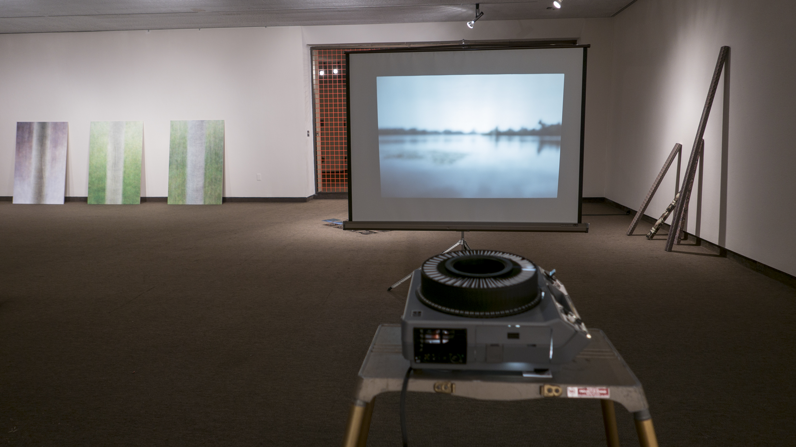

The tension between the physical world and its representations increasingly begs the question – “what is real?”. We can see high definition documentaries of new found organisms, assume every photo has been appropriately filtered for our consumption and upload idealized versions of ourselves into a social realm that fails to mirror our everyday reality. Every experience is mediated; sometimes in highly visible ways, other times the mediation is so common as to remain nearly invisible.
In the two-person exhibition, The World We Inhabit; The World We Made, collaborators Daniel Dean and Ben Moren cast a critical and comic eye toward the failures of this mediation. Choosing to collaborate on only one eponymous artwork A World We Made, each brings a different approach to their individual works in the exhibition as a means of exploring the various forms that mediation takes, and how these forms might be made visible, deconstructed, or even enhanced to a point of absurdity. Viewing the world through their lens becomes an exercise in seeing how we perceive. Each of the works are a blend of media forms: sound, video, sculpture, photography, and assorted mechanical and digital technologies. These combine to create an exhibition of fragments from the world we now inhabit, the world we have all made, where when asked to answer to the aforementioned question, “what is real?” – one might simply answer, “everything”.
A World We Made
2015
80 slides (40 images, 40 text), time advance slide projector
dimensions variable